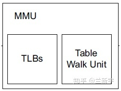
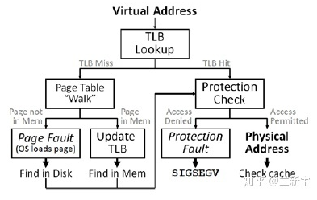
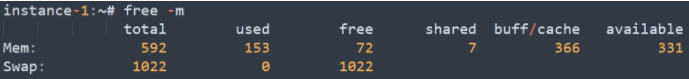
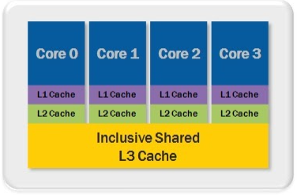
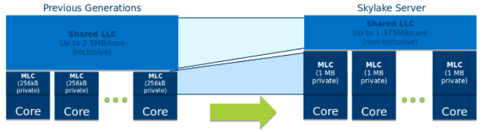
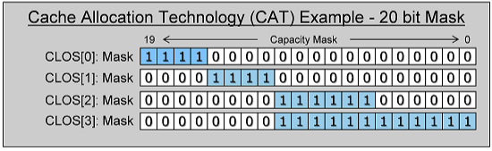
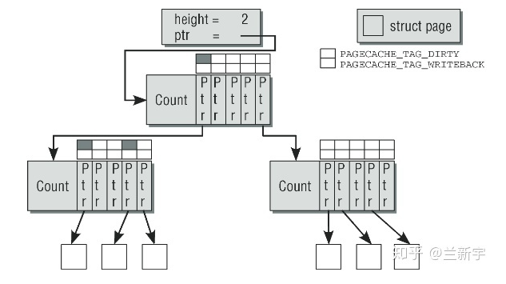
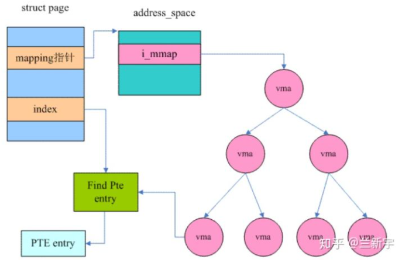
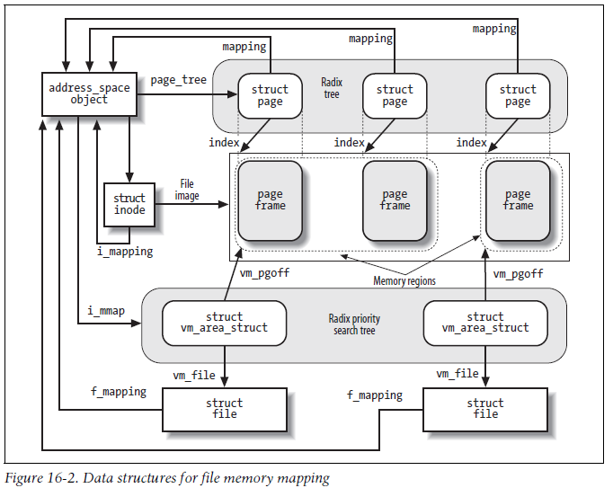

When a process issues the read() system call, it first checks if the data is in the page cache.
In write() system call, caches can implement three strategies
Some caching techniques: https://stackoverflow.com/questions/49092541/which-cache-mapping-technique-is-used-in-intel-core-i7-processor
Cachce coherence is handled by the hardware (processor). Processor also provides some instructions to operate on cache. In x86, there are below instructions to invalidate/flush the cache.
WBINVD, short for "write back invalidate". It first writes back all cache contents that are marked as "modified" to memory, then clear the whole cache.INVD, unlike WBINVD, it doesn't do write back, so it doesn't guarantee the data consistency. It is used when there is no need to keep consistency bewteen cache and memory, such as some testing environment.CLFLUSH/CLFLUSHOPT, short for "cache line flush". It works on the granularity of cache lines, normally used when this cache line doesn't need to be accessed anymore.The performance of the virtual-memory-to-physical-address lookup is very critical, To facilitate this, most processors implement a translation lookaside buffer, or simply TLB, which acts as a hardware cache of virtual-to-physical mappings, these mappings are maintained for pages typically of size 4 KiB, 2/4 MiB or 1 GiB.
 
Usually we have L1 ITLB, L1 DTLB, and shared L2 TLB. TLB has fixed entries of PTE, usually it is small. So a TLB miss is “kinda” common. But because each page size is 4K, so even we only have 64 entries in TLB, it can accommodate 4K * 64 data if we have enough locality in the program.
Reference: number of TLB entries
Sandy Bridge:
| Level | Page Size | Entries | Associativity |
|---|---|---|---|
| L1 DTLB | 4KB | 64 | 4 |
| 2MB,4MB | 32 | 4 | |
| 1GB | 4 | 4 | |
| L2 TLB | 4KB | 512 | 4 |
| 1GB | NONE |
Haswell:
| Level | Page Size | Entries | Associativity |
|---|---|---|---|
| L1 DTLB | 4KB | 64 | 4 |
| 2MB,4MB | 32 | 4 | |
| 1GB | 4 | 4 | |
| L2 TLB | 4KB | 1024 | 8 |
| 1GB | NONE |
Skylake:
| Level | Page Size | Entries | Associativity |
|---|---|---|---|
| L1 DTLB | 4KB | 64 | 4 |
| 2MB,4MB | 32 | 4 | |
| 1GB | 4 | 4 | |
| L2 TLB | 4KB | 1536 | 12 |
| 1GB | 16 | 4 |
TLB miss
Remediation
View TLB miss
# perf stat -e dTLB-loads,dTLB-load-misses,iTLB-loads,iTLB-load-misses -p $PID
Performance counter stats for process id '21047':
627,809 dTLB-loads
8,566 dTLB-load-misses # 1.36% of all dTLB cache hits
2,001,294 iTLB-loads
3,826 iTLB-load-misses # 0.19% of all iTLB cache hits
TLB working with Cache
A good video about how TLB and L1 cache work together: https://www.youtube.com/watch?v=3sX5obQCHNA&ab_channel=DavidBlack-Schaffer
L1 Cache is ususally virtually indexed, Physically tagged cache - VIPT
Kernel needs to maintain the coherence between TLB and page table (because page table is a structure maintained in the kernel, the mapping between TLB and page table has to be mainteind by kernel, not hardware).
munmap()'ed, kernel needs to invalidate the TLB entry, this is called TLB flush.Kernel offers several TLB flush methods. Intel microprocessors supports below TLB-invalidating techniques:
| Macro name | Description | Used by |
|---|---|---|
| __flush_tlb() | Flushes all TLB entries of the non-global pages owned by the current process. Rewrites cr3 register back into itself flush_tlb, |
flush_tlb_mm, flush_tlb_range |
| __flush_tlb_global() | Flushes all TLB entries (including those that refer to global pages, that is, pages whose Global flag is set). Disables global pages by clearing the PGE flag of cr4, rewrites cr3 register back into itself, and sets again the PGE flag |
flush_tlb_all, flush_tlb_kernel_range |
| __flush_tlb_single(addr) | Flushes the TLB of a single Page Table entry of a given process. Executes invlpg assembly language instruction with parameter addr |
flush_tlb_page |
As a general rule, any process switch implies changing the set of active page tables. Local TLB entries relative to the old page tables must be flushed.
when the kernel assigns a page frame to a User Mode process and stores its physical address into a Page Table entry, it must flush any local TLB entry that refers to the corresponding linear address.
Most processors do not provide coherence guarantees for TLB mappings. Instead the kernel provides this guarantee using a mechanism called a TLB shootdown. It operates by sending inter-processor interrupts (IPIs) that runs kernel code to invalidate the stale TLB entries.
Cause:
munmap() or mremap() in one thread cause TLB shootdowns to occur in the threads running on other cores.munmap() and mprotect() will cause a TLB shootdown.malloc, free, etc) will call madvise(...MADV_FREE)/munmap internally, but not necessarily on each invocation.Cost:
A TLB shootdown is an IPI so it has the usual interrupt overhead (1us or so).
Benchmarks of an 8-core Broadwell (E5-2667 v4) found that TLB shootdowns of a single page cause interruptions of 598±6 ns (α=0.05) on the 3.10.10x "production" kernel and 941±13 ns (α=0.05) on the 3.10.10x "production-nohz" kernel.
TLB shootdowns on 16384 pages cause interruptions of 584±16 ns (α=0.05) on the 3.10.10x "production" kernel and 985±25 ns (α=0.05) on the 3.10.10x "production-nohz" kernel.
The difference in interruption time is not proportional to the number of invalidated pages because Linux dynamically selects the most efficient method of invalidating the affected TLB entry. However, invalidating a large number of pages forces Linux to flush the entire TLB, which will result in additional performance effects after the TLB shootdown due to the increased rate of page table walks.
Remediation:
The page cache, as its name suggests, is a cache of pages in RAM. The pages originate from reads and writes of regular filesystem files, block device files, and memory-mapped files.
In most cases, the kernel refers to the page cache when reading from or writing to disk. The pages included in the page cache can be of the following types:
Practically all read() and write() file operations rely on the page cache.
Under Linux, the number of megabytes of main memory currently used for the page cache is indicated in the buff/cache column of the report produced by the free -m command.

The core data structure of the page cache is the address_space object, refer to section here
Individual disk blocks also tie into the page cache, by way of block I/O buffers. A buffer is the in-memory representation of a single physical disk block. Buffers act as descriptors that map pages in memory to disk blocks.
The page cache reduces disk access during block I/O operations by both caching disk blocks and buffering block I/O operations until later. This caching is often referred to as the buffer cache, although as implemented it is not a separate cache but is part of the page cache.
Write operations are deferred in the page cache. Dirty page writeback occurs in below three situations:
When free memory shrinks below a specified threshold, the kernel writes dirty data back to disk to free memory because only clean (nondirty) memory is available for eviction.
dirty_background_ratio: Percentage (default 10%) of dirty system memory to trigger pdflush background write-back, the kernel invokes the wakeup_flusher_threads() call to wake up one or more flusher threads and have them run the bdi_writeback_all() function to begin writeback of dirty pages.dirty_background_bytes: introduced in kernel v2.6.29, amount of dirty memory to trigger pdflush
background write-back. If both dirty_background_ratio and dirty_background_bytes are set, "bytes" parameter takes precedence.dirty_ratio (default 20%）and dirty_bytes: Percentage or amount of dirty memory that causes a writing process to block to handle dirty page write-back first.When dirty data grows older than a specific threshold, sufficiently old data is written back to disk to ensure that dirty data does not remain dirty indefinitely.
dirty_writeback_centisecs 0.01 seconds (default 500, 5 secs), it wakes up a flusher thread and have it run the wb_writeback() function. This function then writes back all data that was modified longer than dirty_expire_centisecs 0.01 seconds (default 3000, 30 secs) ago.When a user process invokes the sync() and fsync() system calls, the kernel performs writeback on demand.
The system administrator can set these values either in /proc/sys/vm or via sysctl.
don't confuse page write-back (with pdflush, used to sync data with storage medium) and page reclaim (with kswapd, used to free up pages when free memory is low)
since kernel v2.6, the kernel threads pdflush threads, performs all three jobs.
there was a pool of pdflush threads, between two and eight as needed. 如果1秒内都没有空闲的pdflush线程可用，内核将创建一个新的pdflush线程，反之，如果某个pdflush线程的空闲时间已经超过1秒，则该线程将被销毁。一个块设备可能有多个可以传输数据的队列，为了避免在队列上的拥塞（congestion），pdflush线程会动态的选择系统中相对空闲的队列。
Since Kernel v2.6.32, pdflush threads have since been replaced by the flusher threads (named flush), which are created per device to better balance the per-device workload and improve throughput.
flusher code lives in mm/page-writeback.c and mm/backing-dev.c and the writeback mechanism lives in fs/fs-writeback.c.无论是内核周期性扫描，还是用户手动触发，flusher threads的writeback都是间隔一段时间才进行的，如果在这段时间内系统掉电了（power failure），那还没来得及writeback的数据修改就面临丢失的风险，这是page cache机制存在的一个缺点。writeback越频繁，数据因意外丢失的风险越低，但同时I/O压力也越大。
If any of the dirty pages are part of a writable memory mapping, the writeback process must first update the page table to mark the page as read-only before writing it to disk. Any subsequent memory write to the page will cause a page fault, letting the kernel update the page cache state to dirty and mark the page writable again. In practice this means that writeback causes TLB shootdowns and that writes to pages that are currently being written to disk must stall until the disk write is complete. This leads to latency spikes for any process that is using file backed writable memory mappings.
Remediation:
To avoid latency spikes due to page cache writeback you cannot create any file backed (or more precisely page cache backed) writable memory mappings. Creating anonymous writable memory mappings using mmap(MAP_ANONYMOUS) or by mapping files on Linux tmpfs or hugetlbfs filesystem is fine.
_mm_prefetch Intel intrinsic: https://www.felixcloutier.com/x86/prefetchh
How to get function length?
One way to determine the size of a function. The command is:
nm -S <object_file_name>
This will return the sizes of each function inside the object file. Consult the manual pages in the GNU using 'man nm' to gather more information on this.
another way is to parse object file, use elf parser
In Xeon the cache consists of 3 levels - L1, L2 and The Last Level Cache (aka LLC or L-3). L1 and L2 caches are assigned to cores exclusively, while LLC is shared among multiple cores. In other words, only the assigned core can read or modify the content L1 and L2 cache lines (line is a smallest unit the cache is transported. Its size is fixed at 64 bytes for all Xeon CPU). Attaching a cache to a CPU contributes to increasing performance - it takes 4 cycles to load a data from L1 cache, 12 cylcles from L2, 36-31 cycles from the Last Level Cache (190 from local memory, 310 from remote)

The cache on Xeon processors before Skylake (Sandy, Ivy, Haswell and Broadwell) is inclusive. It means that once a data is read from memory it fills all levels of cache and cache will include the data from the lower levels. LLC will include a copy of L2 and L1 contents. L2 will include a copy of L1. Once the data in L1 or L2 is modified, the change has to be propagated to LLC, to ensure the "coherency" of its contents. Each cache will listen ("snoop") to cache change messages and act accordingly.

Cache Allocation Technology (CAT) is a feature on Broadwell and newer CPU families, enabling controls for allocating and isolating L3 cache segments to particular cores.
On Broadwell CPUs, the L3 cache is shared by all cores across the same socket. This means that one core can evict cache lines which are in use by other cores. The cache on Broadwell is "inclusive", meaning that a copy of higher level cache has to reside also in the lower level. For example, a copy of L2 has to reside in L3. If a cache line is evicted from L3, to comply with that cache coherency requirement the corresponding line will also be evicted from L2. Even if cores are dedicated to the same process, the isolation is not perfect. Given the increase in core count on single processes, this can have negative impacts to performance when there are cache misses. Some "noisy neighbors" (e.g. kernel, market data or slow path threads that may use a lot of cache), can severely impact the performance of fast path threads. Intel has attempted to fix this by introducing CAT. CAT solves this by essentially slicing the L3 into discrete blocks of L3. These blocks are then assigned per core, trading off max utilization of L3 for better individual core performance.
CAT allows the system to split the L3 into units of cache called 'ways'. A way is a unit of cache (In Broadwell, 20 ways available regardless of L3 size) that can be assigned to a core. Each core can then receive a policy allowing it to utilize one or more of these 1/20th fractions of the total L3 cache.

In contrast to Broadwell, Skylake has only 11 cache ways, although the size of the cache is the same 20M. Consequently each cache way is larger.
A variant of this configuration system is called CDP, which allows further fine tuning of cache allocations by splitting the L3 into a data and code segment. So far there is no data to indicate that using CDP is advantageous for lower latency than CAT provides alone.
For more info see
To maintain a generic page cache, one not tied to physical files or the inode structure, Linux uses address_space object to represent a page cache. Think of address_space as the physical analogue to the virtual vm_area_struct.
一个address_space管理了一个文件在内存中缓存的所有pages。
The address_space structure is defined in <linux/fs.h>:
struct address_space {
struct inode *host; /* owning inode */
struct radix_tree_root page_tree; /* radix tree of all pages */
spinlock_t tree_lock; /* page_tree lock */
unsigned int i_mmap_writable; /* VM_SHARED ma count */
struct prio_tree_root i_mmap; /* list of all mappings */
struct list_head i_mmap_nonlinear; /* VM_NONLINEAR ma list */
spinlock_t i_mmap_lock; /* i_mmap lock */
atomic_t truncate_count; /* truncate re count */
unsigned long nrpages; /* total number of pages */
pgoff_t writeback_index; /* writeback start offset */
struct address_space_operations *a_ops; /* operations table */
unsigned long flags; /* gfp_mask and error flags */
struct backing_dev_info *backing_dev_info; /* read-ahead information */
spinlock_t private_lock; /* private lock */
struct list_head private_list; /* private list */
struct address_space *assoc_mapping; /* associated buffers */
};
i_mmap field is a priority search tree of all shared and private mappings in this address space.
<linux/radix-tree.h>nrpages in the address spacehost field points to the inode. If it is NULL, there is no associated indoe (eg. it can associated with the swapper)a_ops field points to the address space operations table.Radix tree的每个节点可以存放64个slots（由RADIX_TREE_MAP_SHIFT设定，小型系统为了节省内存可以配置为16），每个slot的指针指向下一层节点，最后一层slot的指针指向struct page，因此一个高度为2的radix tree可以容纳64个pages，高度为3则可以容纳4096个pages。
如何在radix tree中找到一个指定的page呢？那就要回顾下struct page中的mapping和index域了，mapping指向page所属文件对应的address_space，进而可以找到address_space的radix tree，index既是page在文件内的offset，也可作为查找这个radix tree的索引，因为radix tree就是按page的index来组织struct page的。
这里是用page index中的一部分bits作为radix tree第一层的索引，另一部分bits作为第二层的索引，以此类推。因为一个radix tree节点存放64个slots，因此一层索引需要6个bits，如果radix tree高度为2，则需要12个bits。
内核中具体的查找函数是find_get_page(mapping, offset)，如果在page cache中没有找到，就会触发page fault，调用__page_cache_alloc()在内存中分配若干物理页面，然后将数据从磁盘对应位置copy过来，通过add_to_page_cache()-->radix_tree_insert()放入radix tree中。在将一个page添加到page cache和从page cache移除时，需要将page和对应的radix tree都上锁。

Linux中radix tree的每个slot除了存放指针，还存放着标志page和磁盘文件同步状态的tag。如果page cache中一个page在内存中被修改后没有同步到磁盘，就说这个page是dirty的，此时tag就是PAGECACHE_TAG_DIRTY。如果正在同步，tag就是PAGECACHE_TAG_WRITEBACK。
只要下一层中有一个slot指向的page是dirty的，那么上一层的这个slot的tag就是"dirty"的。
前面介绍struct page中的flags时提到，flags可以是PG_dirty或PG_writeback，既然struct page中已经有了标识同步状态的信息，为什么这里radix tree还要再加上tag来标记呢？
因为page数量众多，内核不可能为每一个page维护一个timer，因此在判断是否应该writeback时，是以inode为单位的，而一个inode对应的address space中，如果去逐一比对每个page的"PG_dirty"标志位，将做很多无用功。而当slot也加上"dirty"标志位后，那么如果slot是clean的，就没有必要再扫描其下一层的slot和page了，这样可以减少开销。
现在address_space中radix tree已经被xarray取代了（参考这篇文章）。
如果要回收page cache中一个页面，回收之前，需要找到所有指向这个page的PTE页表项。需要将这些PTE中P标志位设为0（not present），同时将page的物理页面号PFN也全部设成0，要不然下次PTE指向的位置存放的就是无效的数据了。
从虚拟地址映射到物理地址是正向映射，而通过物理页面寻找映射它的虚拟地址，则是reverse mapping（逆向映射）。page的确没有直接指向PTE的反向指针，但是通过page在文件中的offset/index和address_space的VMA mmap线性映射，就可以知道VMA中的哪个虚拟地址映射了这个page。


PST是一种糅合了radix tree和heap的数据结构，具体实现较为复杂，现在已经被基于augmented rbtree的interval tree所取代，详情请参考这篇文章。
The operations table is represented by struct address_space_operations and is also defined in <linux/fs.h>:
struct address_space_operations {
int (*writepage)(struct page *, struct writeback_control *);
int (*readpage) (struct file *, struct page *);
int (*sync_page) (struct page *);
int (*writepages) (struct address_space *, struct writeback_control *);
int (*set_page_dirty) (struct page *);
int (*readpages) (struct file *, struct address_space *, struct list_head *, unsigned);
int (*write_begin)(struct file *, struct address_space *mapping,
loff_t pos, unsigned len, unsigned flags,
struct page **pagep, void **fsdata);
// ... more operations omitted ...
};
Each backing store implements how it interacts with the page cache via its own address_space_operations. For example, the ext3 filesystem defines its operations in fs/ext3/inode.c.
struct address_space_operations ext3_writeback_aops = {
.readpage = ext3_readpage,
.writepage = ext3_writeback_writepage,
.releasepage = ext3_releasepage,
...
}